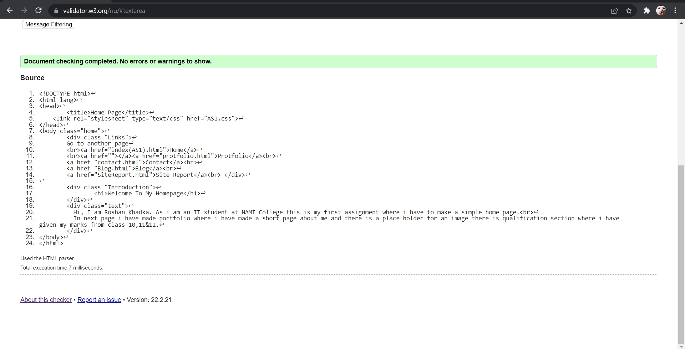
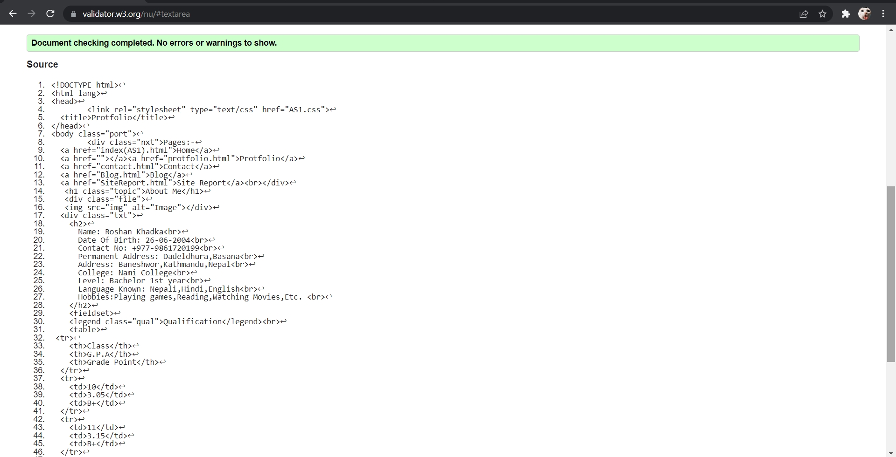
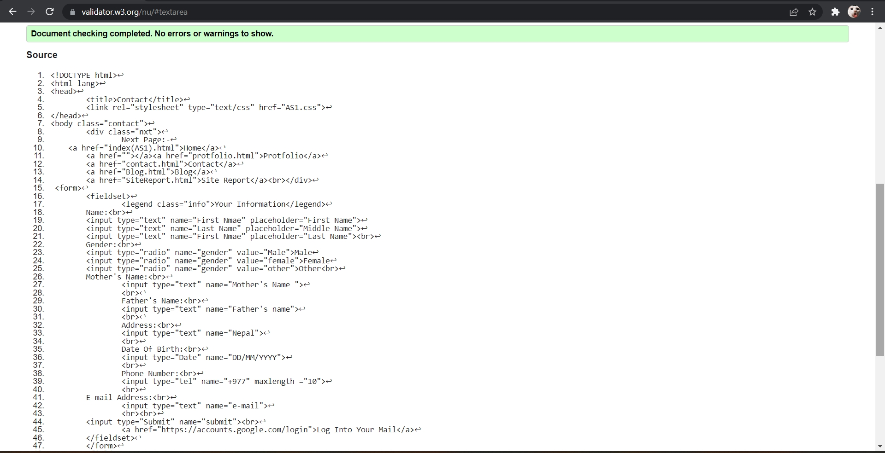
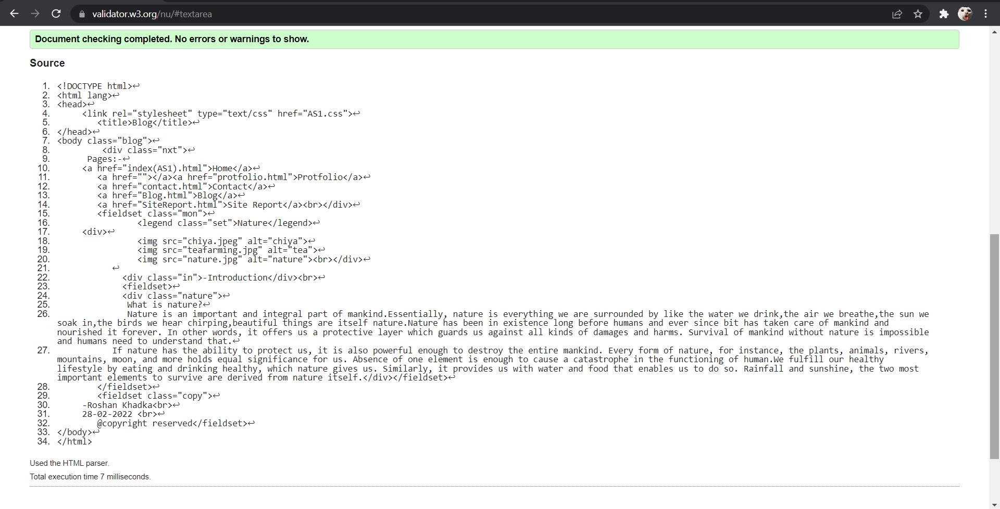

Pages:-
Home
Protfolio
Contact
Blog
Site Report
Site Report
As i am studing Bsc.(hons) Networking, I was having problems at first.Some of my codes were facing errors. The university slides and the lectures were also useful. It help me many times to solve the errors while making html pages. There were some website from where i took help in my assignment I have referenced it in my Harvard referencing. So , I hope I wouldn’t get any problems in that place. I experienced many things like making websites through HTML and design it through CSS. We can use internal and external CSS but we were told to use external CSS so I have also used the external CSS. My web pages are not too good but I guess it is simple. I used colors that will match the background and I have used the background image because it is copy right free and it makes the page more attractive. I took the help from the websites like w3school and the lecture slides. The font size is perfect in each and every place I choose it because it looked perfect.
Report Formatting
At first, I completed the Home page in which I have used the text align right for the links of other pages. I have given short introduction on me.
In second page, I have my portfolio page. In that page I have given information about me and in qualification I have used columns for my results.
In third page, I have made a form using Form HTML and given field set for form and my information. I have used radio button for gender and there is a link to log in to your G-mail. There may be mistake sorry for that.
In fourth page, I have made Blog of Nature. I have used columns for changing paragraph and the picture of a natures and added some information about nature.
In fifth or current page, I have gave the report about by ups and downs in first phase and report format in second phase. I will attach the screenshot of validation of my HTML codes.
#Note: Every page has link at top to go in each and every page form any pages.
Validation
#Screenshot of validation of HTML codes
Home Page:-

Portfolio:- 
Contact:-

Blog:- 